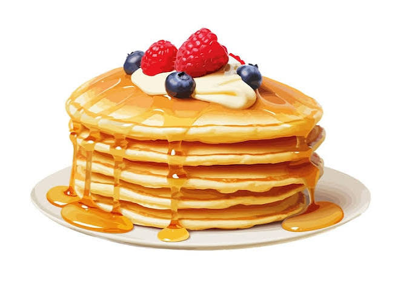

Home
Pancakes

Description
Classic pancakes are a beloved breakfast staple celebrated for their
light, fluffy texture and golden-brown exterior. The secret to their
fluffiness lies in a gentle hand, as leaving small lumps in the batter
ensures the gluten does not overdevelop and make them tough. Cooked on a
hot griddle, they rise beautifully and create the perfect canvas for your
favorite toppings.
Ingredients
- All-purpose flour
- Baking powder and salt
- Granulated sugar
- Whole milk
- Large egg
- Melted unsalted butter
Steps
-
Classic pancakes are a beloved breakfast staple celebrated for their
light, fluffy texture and golden-brown exterior. The secret to their
fluffiness lies in a gentle hand, as leaving small lumps in the batter
ensures the gluten does not overdevelop and make them tough. Cooked on a
hot griddle, they rise beautifully and create the perfect canvas for
your favorite toppings.
-
Combine wet ingredients: In a separate bowl, beat the egg, milk, and
melted butter until completely smooth.
-
Blend gently: Pour the wet mixture into the dry ingredients and stir
with a spatula just until combined, leaving small lumps.
-
Heat the pan: Grease a non-stick skillet or griddle and heat it over
medium heat until a drop of water sizzles on contact.
-
Heat the pan: Grease a non-stick skillet or griddle and heat it over
medium heat until a drop of water sizzles on contact.